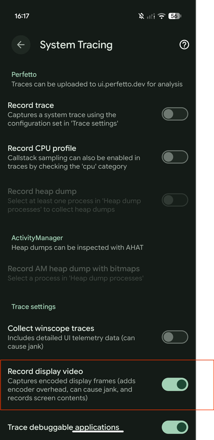
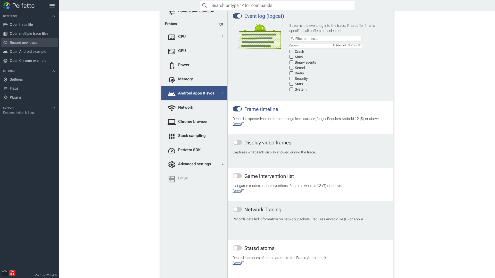
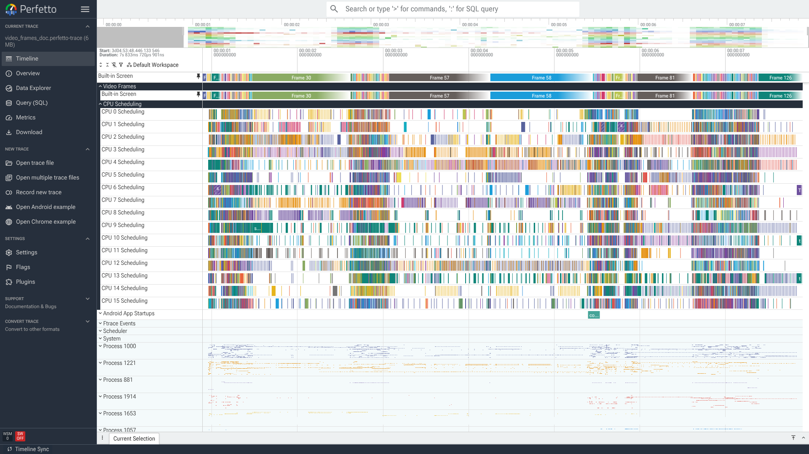
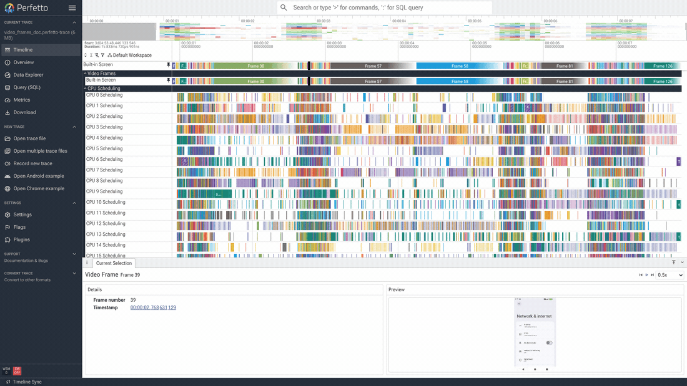

屏幕录制
android.display.video 数据源会记录 trace 采集期间每个物理屏幕 显示的内容。Perfetto 将帧作为编码后的视频流存储在 trace 中，UI 会 添加每个屏幕的时间线 track，在浏览器中解码它们。你可以悬停在 track 上预览帧、像播放视频一样回放帧，以及点击任意帧将其与下方的 track 对齐。
它会录制屏幕的实际内容，因此仅适用于 userdebug（debuggable）设备，
任何包含此内容的 trace 都是敏感的：它精确地显示了屏幕上的内容。
本指南涵盖：
- 工作原理及成本 — 帧如何进入 trace，以及对设备的开销。
- 采集屏幕视频：三种开启方式 — 设备端开关、录制页面以及可完全控制质量和大小的原始配置。
- 查看屏幕视频：时间线 track、 悬停预览帧以及保持时间线同步地回放采集内容。
工作原理及成本
在数据源启用期间，设备将每个屏幕显示的内容编码为视频流并存储在 trace 中 — 屏幕每次变化产生一帧 — UI 在浏览器中将其解码回来。 这有两方面成本：
- 编码器和 CPU 开销。在 trace 运行期间，编码帧使用设备的视频 编码器。在繁忙的屏幕上这会增加负载，并可能干扰你正在测量的时序。
- Trace 大小。视频流随分辨率和屏幕变化量而增长；下面的
scale和max_stream_size_bytes选项可以控制其大小上限。
当数据源关闭时，零成本。
采集屏幕视频
有三种方式开启屏幕视频采集，从最简单到最多控制。
在设备上，使用 System Tracing
System Tracing 应用在 Trace settings 下有一个 Record display video 开关。启用它，然后像往常一样录制 trace — 采集会自动包含 在内。这是在你手中的设备上最快的方式 — 无需编写配置。

从录制页面
打开 Perfetto UI 录制页面，在 Android probes 下找到 Display video
frames，然后启用它。这会使用 producer 的默认设置将
android.display.video 数据源添加到生成的配置中。

从原始 trace 配置
要获得完全控制，自行编写配置。启用 android.display.video，
并添加 display_video_config 来设置质量和大小。不带选项时，
每个屏幕使用设备的默认设置：
data_sources {
config {
name: "android.display.video"
}
}添加 display_video_config 来调优采集。每个字段都是可选的；
未设置或为零的字段使用 producer 默认值。
data_sources {
config {
name: "android.display.video"
display_video_config {
scale: 0.5
format: FORMAT_H264
key_frame_interval_secs: 2
max_stream_size_bytes: 67108864
}
}
}| 选项 | 描述 |
|---|---|
scale |
采集前应用于每个屏幕分辨率的比例因子，例如 0.5 为一半大小或 0.25 为四分之一。较低的比例意味着更少的编码器负载和更小的 trace，但会牺牲细节。 |
format |
FORMAT_H264（默认）或 FORMAT_HEVC。HEVC 在相同质量下产生更小的流，但设备必须支持 HEVC 编码才能采集，浏览器必须支持 HEVC 解码才能预览。 |
key_frame_interval_secs |
关键帧的发射频率。较小的值使定位更流畅但增大 trace；较大的值更紧凑但拖拽较慢。 |
max_stream_size_bytes |
每个屏幕的发送字节数上限。当屏幕达到上限时，其流被拆除（记录大小上限错误），而非无限增长。未设置时，设备默认每屏幕 256 MiB 的上限。 |
大小限制
屏幕视频每屏幕限制为 256 MiB，在两个独立的位置强制执行：
- 在设备端，
max_stream_size_bytes限制每个流的发送量（默认 256 MiB； 达到限制时记录大小上限错误）。 - 独立地，trace_processor 在加载 trace 时丢弃每个流超过 256 MiB 的 任何帧，因此仅提高设备端上限不会在 UI 中获得更多帧。
在长会话或高分辨率下，视频因此可能在 trace 结束之前停止。这两个限制 都源自保存流的存储成本，而非根本性约束。如果它们妨碍到你，请在跟踪 issue 上评论和点赞以便进行优先级排序： perfetto#6609。
查看屏幕视频
时间线 Track
包含屏幕视频的 trace 会显示一个 Video Frames 分组，每个屏幕有 一个 track（对于手机，通常是一个 Built-in Screen）。Track 上的 每个 slice 是一个采集的帧，标有帧号。该编号仅是采集帧的顺序计数器 — 与帧时间线中的 vsync ID 无关。

悬停预览帧
沿 track 移动指针即可预览帧。光标下的帧被解码并显示为该行上方的 缩略图，因此你可以拖拽寻找想要的帧。
回放
点击一个帧打开其详情。面板左侧显示帧号和时间戳，右侧显示解码的 Preview，页眉中有播放控件：上一帧、播放/暂停、下一帧和播放速度 选择器。按下播放，采集内容像视频一样播放：预览逐帧前进，时间线选择 也随之前进，因此 UI 其余部分始终保持与屏幕上内容对齐。使用上一帧/ 下一帧按钮逐帧前进，或更改速度选择器以更慢（最低 0.1×）或更快 （最高 2×）地回放。
